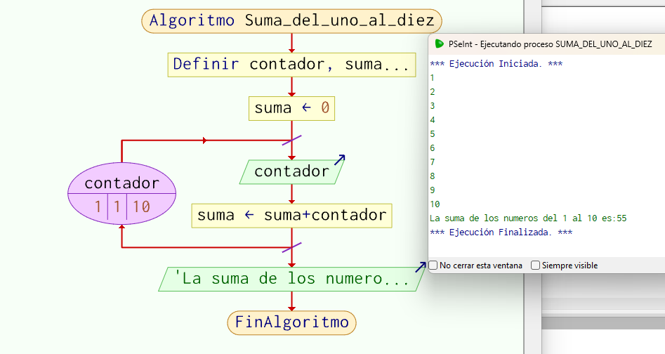

PseInt Hiperblog
Tu blog de Pseudocodigos
Pseint pseudocode blog
Elabore un algoritmo (en pseudo-código) que posibilite la lectura de dos
valores diferentes, identifique cuál de los dos valores es el mayor y lo
muestre
Algoritmo Mayor_de_dos_Numeros
// Solicitud de datos
Escribir "Ingresa numero 1";
Leer num1;
Escribir "Ingresa numero 2";
Leer num2;
// Asignar comparación
Si num1 > num2 Entonces
// Mostrar resultados
Escribir "El mayor es:", num1;
SiNo
Escribir "El mayor es:", num2;
Fin Si
FinAlgoritmo
Desarrolle un algoritmo que calcule la suma de los numeros enteros
del 1 al 10, es decir, la suma de 1 + 2 + 3 + ... + 10.

Algoritmo Suma_del_uno_al_diez
Definir contador, suma Como Entero;
suma = 0;
Para contador <- 1 Hasta 10 Con Paso 1 Hacer
Escribir contador;
suma = suma + contador;
Fin Para
Escribir "La suma de los numeros del 1 al 10 es:", suma;
FinAlgoritmo